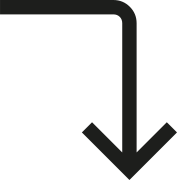

Sobre Mí
Desde una edad temprana, desarrollé una fuerte afinidad por el diseño y el arte, lo que me llevó a estudiar Diseño Gráfico en la “Universidad de Buenos Aires” (FADU), especializándome en identidades corporativas. Como diseñador freelance desde 2018, he trabajado en varios proyectos, incluyendo la identidad de marca para la 'Municipalidad de San Cristóbal’ y sub-marcas para empresas reconocidas como “Unión Ferroviaria” y “Trenes Argentinos”, donde me enfoqué en branding, comunicación y diseño de aplicaciones.
Mi educación y pasión por el diseño me han permitido adquirir habilidades en UX/UI, Community Management y Desarrollo Front End. Este portafolio refleja mi compromiso con la creatividad y la búsqueda de soluciones efectivas.
Habilidades